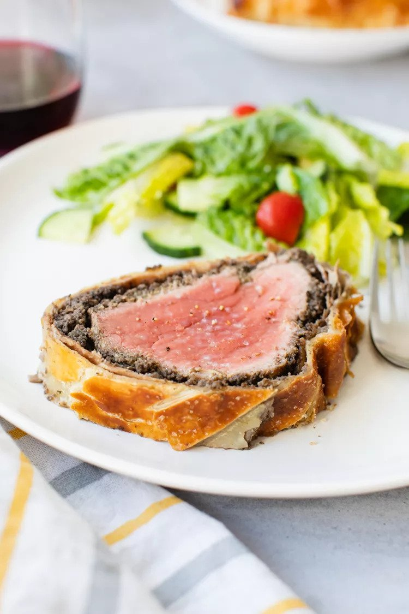

North Carolina Barbeque
Recipe

A few months ago my father got an inkling to make Beef Wellington, beef tenderloin smothered with mushroom duxelles,
wrapped in puff pastry, and baked. Who knows where he got the idea, maybe just curiosity.
Beef Wellington is one of those dishes that was a lot more popular 40 years ago than it is now.
But once my dad decides he wants to make something, come hell or high water, it will be made.
It also helps that Chef Gordon Ramsay has a video online on how to make his version of Beef Wellington,
using Parma ham wrapped around the tenderloin instead of the more traditional pâté de foie gras.
ingredients
- 1 pound thick beef tenderloin
- Kosher salt and freshly ground black pepper
- 2 tablespoons extra virgin olive oil
- 2 tablespoons yellow mustard (like Coleman's Original English Mustard)
- 1 pound mushrooms (see recipe note)
- 4 thin slices ham (Parma ham if you can get it) or prosciutto
- 1 (7 to 8 1/2-ounce sheet) puff pastry, thawed (see recipe note)
- 2 large egg yolks, beaten
- Flaky salt, for sprinkling on top
steps
- Preheat the oven to 400F
- Sear the beef
- Brush the beef with mustard
- Prepare the mushrooms
- Wrap the beef in mushroom paste and ham
- Roll out the puff pastry and wrap the beef
- Brush with the egg wash and score
- Bake in the oven